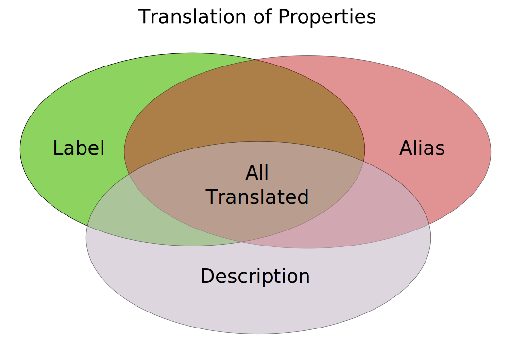

About
WDProp provides a visual interface to understanding and improving multilingual and collaborative ontology development on Wikidata. Its goal is to understand different aspects of Wikidata properties, particularly focusing on the translation process. Every property has three major information that requires to be translated: label, description and aliases. A property may have none, some or all of these information in any given language. Properties can be therefore be separated into two categories: translated properties and untranslated properties. A contributor may wish to focus on translating the labels or a particular set of properties. WDProp provides an interface to contributors for finding properties that requires translation.

Wikidata is highly evolving. New properties are being proposed, discussed and created every day. It is highly difficult to know the latest statistics like the total count of properties, datatypes, supported languages etc. unless contributors make queries on the Wikidata query service. WDProp makes use of the query service to provide these statistics related to the properties and other relevant information.
Features
WDProp provides the following information:
- Bookmarkable links
- List of supported languages
- Translation statistics of labels, descriptions and aliases of Wikidata properties
- Missing translation statistics: property labels, descriptions and aliases needing translation
- Search properties by their labels (multilingual)
- Compare translation statistics among different languages
- Navigation of properties by their datatypes and their describing properties
- View already translated labels, descriptions and aliases in any supported language
- Translation statistics of property discussion templates
- Support navigation by classes
- Improve search results
- Support search and language parameter in URLs
- Visualize path of translation and provenance information
Technologies
WDProp can be tested on any modern browser. It makes use of the basic web technologies in a manner that anybody can download the set of HTML files and test WDProp in a desktop or a mobile environment. It can also be integrated to any server supporting HTML pages. Following are the web technologies used for creating WDProp:
- HTML, Javascript, CSS, JSON
- SPARQL queries
Conferences
- WDProp: Web Application to Analyse Multilingual Aspects of Wikidata Properties, John Samuel, OpenSym 2021, 15-17 September 2021, Madrid (PDF))
- Analyzing and Visualizing Translation Patterns of Wikidata Properties, John Samuel, CLEF 2018, Avignon, France, 10-14 September, 2018, Lecture Notes in Computer Science, vol 11018. Springer, Cham (Link)
- Towards Understanding and Improving Multilingual Collaborative Ontology Development in Wikidata, John Samuel, Wiki Workshop 2018 (held at The Web Conference 2018), Lyon, France, 24 April 2018 (Link, PDF, Open access, Slides)
- Collaborative Approach to Developing a Multilingual Ontology: A Case Study of Wikidata, John Samuel, Metadata and Semantic Research. MTSR 2017. Communications in Computer and Information Science, vol 755. Springer, Cham (Link)
Demonstrations
- How can I contribute to Wikidata properties? Introducing the WDProp tool. Wikimedia Hackathon 2018, Barcelona, 20th May, 2018
Source code
Team
- John Samuel
Acknowledgements
- Wikidata community
- Wikimedia Hackathon 2018